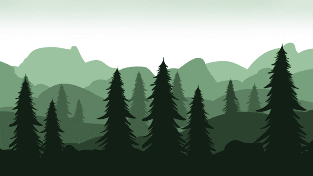

Contos Mágicos
O Mistério da Floresta
Em uma floresta mágica chamada Eldoria, cheia de criaturas encantadas e segredos, uma jovem chamada Clara decide explorar o local. Ao seguir os sons da natureza, ela encontra um lago deslumbrante, onde uma luz suave no centro a atrai. Ao tocar a água, Clara é envolvida por uma energia e encontra os guardiões da floresta, que revelam que ela precisa ajudar a restaurar o equilíbrio da floresta, que está em perigo. Com a ajuda dos guardiões, Clara descobre que o verdadeiro mistério é a conexão entre todos os seres vivos, tornando-se assim a protetora da Floresta de Eldoria.
A Lenda do Lago

Em uma vila esquecida, havia um lago encantado chamado Lago da Iluminação, cuja água refletia não apenas o céu, mas também os sonhos de quem olhasse. Em noites de lua cheia, o lago se tornava um portal de possibilidades. Certa noite, Sofia, uma jovem curiosa, visitou o lago e, ao olhar para suas águas mágicas, vislumbrou seus próprios sonhos. Desejando que todos na vila pudessem realizar seus desejos, ela fez um pedido. Na manhã seguinte, os moradores, inspirados pela magia do lago, começaram a perseguir seus objetivos. Com o tempo, a lenda do lago se espalhou, trazendo esperança e realização à vila, enquanto Sofia sempre lembrava da noite em que seus sonhos se tornaram realidade. O lago se tornou um símbolo da magia interior de cada um.